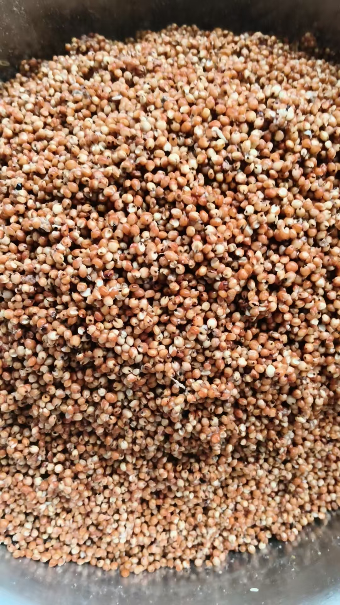
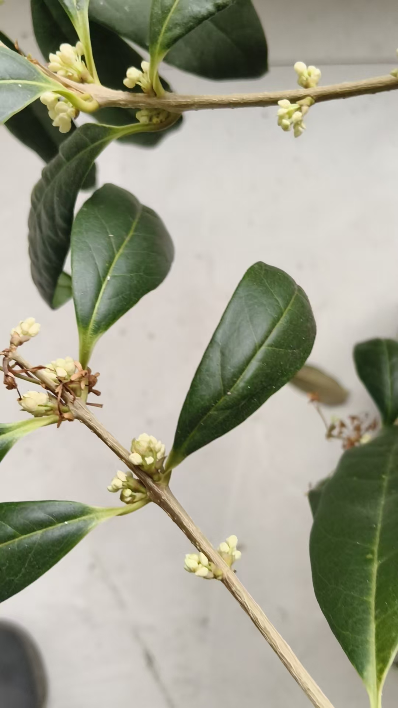

20260930盲派秘密口诀
符咒术法 原始对话记录
第一次尝试做白酒
@紫鸢真人 ，能让高纬或者分身做吗
我已经一个人分成三份了
[呲牙][呲牙][呲牙]
楼上坐着米酒
家里做白酒
地里雇了三个人在干活
[憨笑][憨笑][憨笑][憨笑]
自己能做的就不麻烦高维了
比如吃饭喝酒，是肉身的享受
让高维吃喝，
自己就享受不到了
[憨笑][憨笑][憨笑][憨笑]
哈哈哈哈哈
师父真的是
请李白，他爱喝酒，喝酒做事作诗三不误

桂花要开了
正茶二杏三桃红
四葵五榴六莲蓬
七菱八桂九菊放
十松子柏腊梅逢
[憨笑][憨笑]
看似花名
实际是盲派秘密口诀
小时候背的滚瓜烂熟，现在也忘不了
以下为编者整理的主题文章
编者整理 · 主题文章
正茶二杏三桃红
导读：看似花名，实际是盲派秘密口诀。正茶二杏三桃红，四葵五榴六莲蓬，七菱八桂九菊放，十松子柏腊梅逢。小时候背的滚瓜烂熟，现在也忘不了。
第一次尝试做白酒。
有人问，能让高维或者分身做吗。
我已经一个人分成三份了。楼上坐着米酒，家里做白酒，地里雇了三个人在干活。
自己能做的就不麻烦高维了。比如吃饭喝酒，是肉身的享受。让高维吃喝，自己就享受不到了。
师父接了一句。请李白，他爱喝酒，喝酒做事作诗三不误。
桂花要开了。
正茶二杏三桃红。四葵五榴六莲蓬。七菱八桂九菊放。十松子柏腊梅逢。
念下来，是十二个月的花。正月茶花，二月杏花，三月桃花，到十月松子，十一月柏，十二月腊梅。
他说，看似花名，实际是盲派秘密口诀。
小时候背的滚瓜烂熟，现在也忘不了。
这一类口诀，他还有别的。讲择日的时候，他说过，要记住今年一年里每天的天干地支，这是盲派的秘诀。一般瞎子算命，要记住一百二十年的干支。不过，很简单，就是一百二十句话。只是有个规矩——明眼人要给盲人留饭碗。
花名下面藏着干支，干支下面藏着一个人的日子。念起来像顺口溜，用起来是算盘。他十来岁背下的，如今夹在酿酒、种桂花的闲话里，随口就出来了。
正茶二杏三桃红。
就这一句起头。
说明与免责：本站为民间修炼、民俗文化与传统文化资料的整理与记录，内容源自传承者口传与个人修习体会，仅供文化交流与研究参考，不构成医疗、健康、投资或任何功效承诺。所述内容属传统术数范畴，请理性看待；如身体不适，请及时就医。请遵守法律法规与公序良俗。